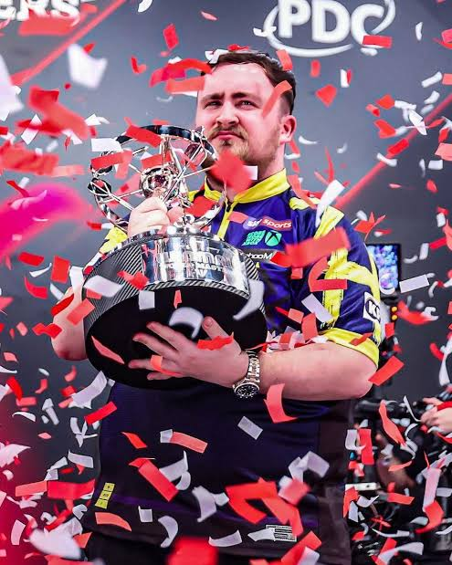
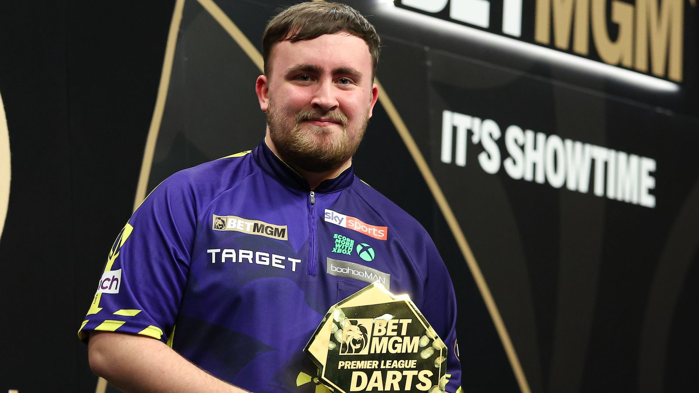
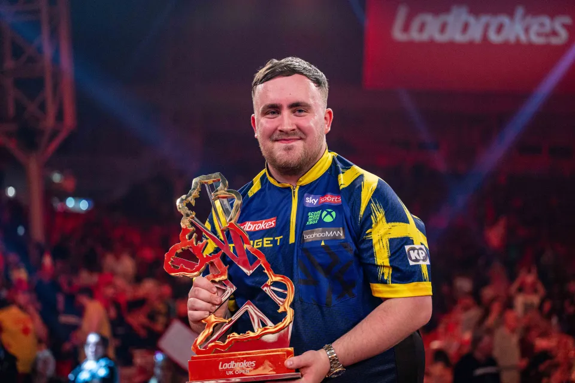
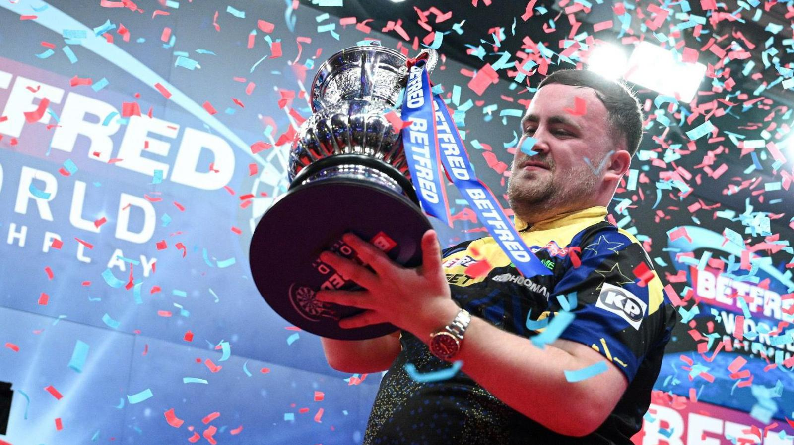
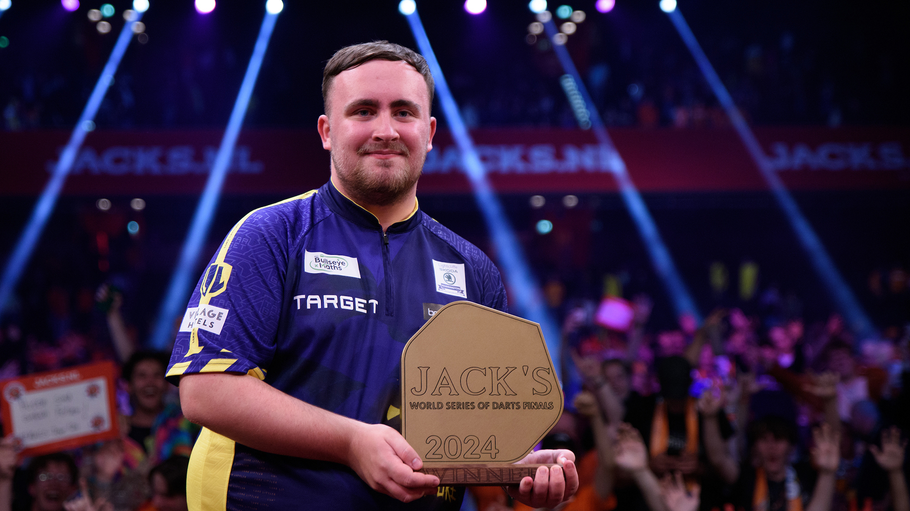
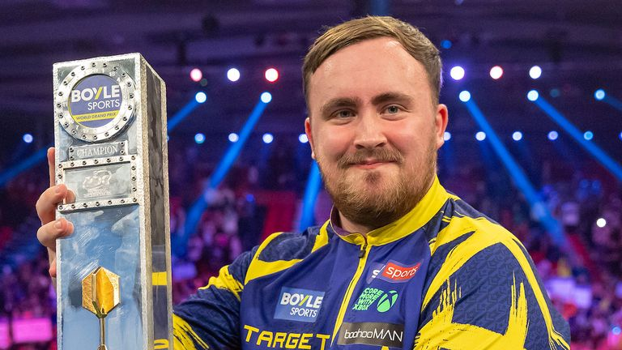
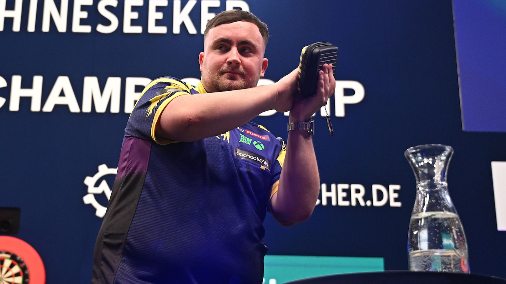
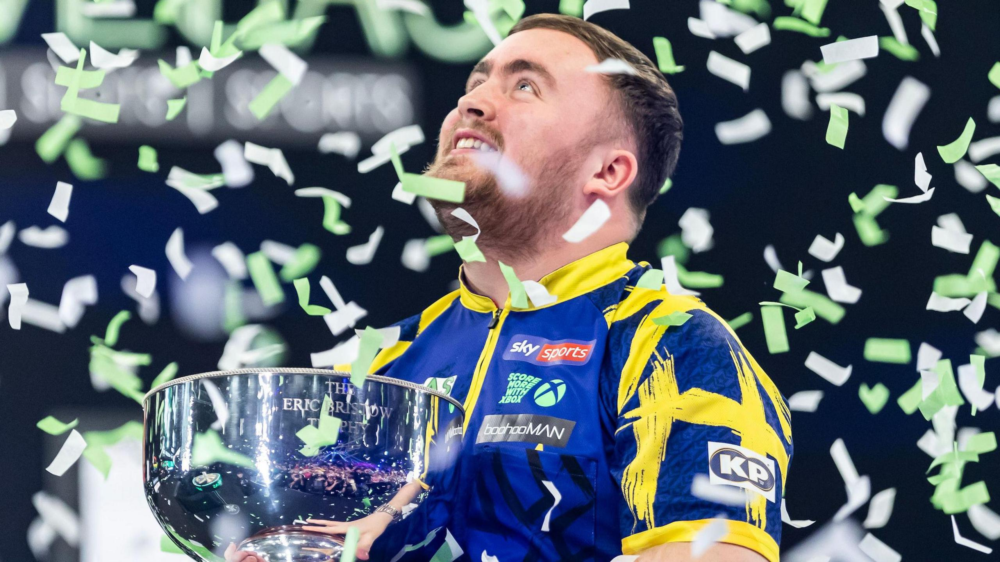
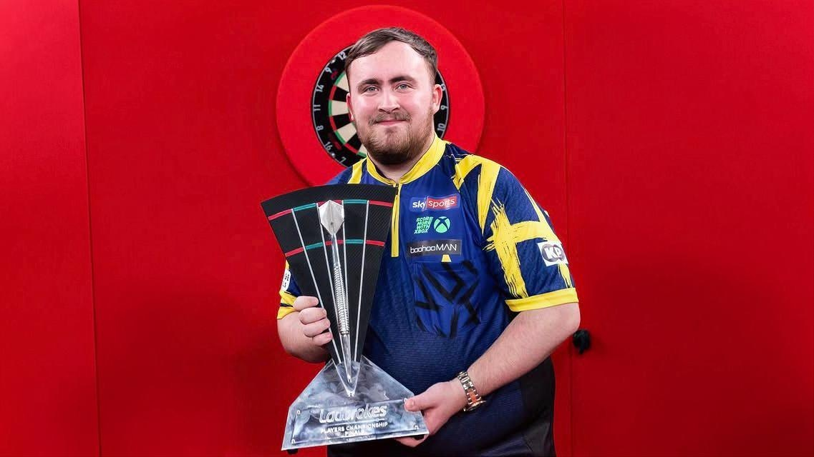

Wikipédián itt található
Luke Littler kétszeres világbajnok angol dartsjátékos. 2019 és 2020 között a British Darts Organisation, majd 2023-tól a Professional Darts Corporation tagja. 2023-ban megnyerte a PDC ifjúsági világbajnokságát, 2025-ben a sportág legfiatalabb világbajnoka lett 17 évesen. Beceneve "The Nuke".
Luke Littler akkor robbant be a darts világában, amikor 14 évesen dobott egy kilencnyilast. 2022-ben megnyerte az Isle of Man Open ifjúsági bajnokságát, valamint a Romanian Classic bajnokságot is. 2023-ban megnyerte a MODUS Super Series versenysorozatot, majd a PDC Ifjúsági világbajnokságát is, ezzel kvalifikált a 2024-es PDC-világbajnokságra. Ő a második legfiatalabb résztvevő a PDC-dartsvilágbajnokságok történelmében, egyben a legfiatalabb, akinek sikerült mérkőzést nyernie a versenyen: mindössze 16 évesen és 11 hónaposan. 2025-ben 17 évesen és 347 naposan a sportág legfiatalabb világbajnoka lett, miután 7–3-ra legyőzte a világbajnoki döntőben Michael van Gerwent, pont ezen rekord korábbi csúcstartóját (24 év).

A sportág abszolút csúcseseménye, a legnagyobb presztízsű és összdíjazású torna, amelyet a londoni Alexandra Palace-ban rendeznek meg.
A 2027-es PDC-dartsvilágbajnokságot 2026. dec. 11-től lehet nézni a SportTV-n.
Az év első nagy tornája.
Luke Littler a világ legfiatalabb dartsvilágbajnoka, mindössze 17 éves volt amikor megnyerte a 2025-ös vb-t.
December közepe – Január eleje
Meghívásos torna, amelyen hagyományosan a világranglista legjobb 24 (korábban 16) játékosa mérheti össze a tudását.
Az év második nagy tornája.
2026-ban sikerült bepótolnia ezt a hiányzó trófeát is.
Január vége


Egy több hónapon át tartó, 16+1 állomásból álló csütörtök esti sorozat, amely egy négyes döntővel (Play-Offs) zárul május végén. Nem ranglista-torna, de kiemelt presztízsű.
Az év harmadik nagy tornája.
Luke Littler volt az a második játékos, aki a Premier League döntőjében kilencnyilast dobott, Phil Taylor után.
Február – Május (csütörtök esténként)
A „darts FA-kupája”. Különlegessége, hogy nincs kiemelés, minden forduló után teljesen nyílt sorsolást tartanak, és az amatőrök is esélyt kapnak a kvalifikációra.
Az év negyedik nagy tornája.
Márciusi torna, amit Milton Keynes-ben rendeznek. Érdekesség, hogy egy sátor szerű helyen rendezik a versenyt, és egyszerre nyolc színpadon is játszanak, hiszen 160 játékos csap össze.
Március eleje


Nemzetközi páros csapatverseny, ahol az egyes országok két-két legjobb játékosa képviseli a hazáját egy egyedülálló, páros formátumú tornán.
Az év ötödik nagy tornája.
Bár 2025-ben csúnya vereséget szenvedett a brit csapat, 2026-ban megmutatták hogy miért Littler és Humphries a világranglista első kettő helyezettje. Egyébként pedig van Veen és van Gerwen, a világranglista harmadik és negyedik helyzettjeit győzték le a döntőben.
Június közepe
A nyár legfontosabb viadala a patinás blackpooli Winter Gardensben, amelyet hagyományos leg-formátumban játszanak, és a világbajnokság után a második legnagyobb presztízzsel bír.
Az év hatodik nagy tornája.
World Matchplay történetének legmagasabb döntős átlagát, 111,53-as átlagot dobott Littler, és az új tornaátlag rekordja is az övé, ami 111,04. A Nathan Aspinall elleni mérkőzésén egy tökéletes 9 nyilas leg-et is elért.
Július közepe


A világ különböző pontjain (pl. Ausztrália, USA, Ázsia) megrendezett globális bemutató tornák sorozatát lezáró, meghívásos döntő.
Az év hetedik nagy tornája.
A szeptemeri, amszterdami tornán elszenvedett kudarc egyben azt is jelentette, hogy véget ért Littler történelmi menetelése, amellyel megpróbálta az év összes összes kiemelt PDC-major tornáját megnyerni.
Szeptember közepe
Az egyetlen olyan nagytorna, ahol a leg megnyeréséhez nemcsak dupla szektorral kell kiszállni (befejezni), hanem duplával is kell elkezdeni (Double In / Double Out).
Az év nyolcadik nagy tornája.
A 2025-ös győzelemmel a bajnoki cím mellett a £120 000-os fődíjat is hazavihette.
Október eleje


A kontinensen zajló European Tour versenysorozat ranglistájának legjobb játékosai kapnak meghívást erre a kiemelt tornára.
Az év kilencedik nagy tornája.
2026-os Európa-bajnokságot 2026. október 22–25. között rendezik meg, ahol Littler már biztosította a helyét, és nagy esélyesként vág neki a küzdelmeknek, hogy teljessé tegye a rangos trófeagyűjteményét.
Október vége
Az egyetlen major torna, amely csoportkörrel indul. A PDC bajnokai mellett más darts-szervezetek legjobbjai és a női topjátékosok is meghívást kapnak rá.
Az év tizedik nagy tornája.
A 2026-os Grand Slam of Darts tornát 2026. november 14. és 22. között rendezik meg a wolverhamptoni WV Active Aldersley sportközpontban. Luke Littler kétszeres címvédőként érkezik a versenyre (miután 2024-ben és 2025-ben is megnyerte azt), és a tornán eddigi pályafutása során még veretlen.
November közepe


A zárt ajtók mögött zajló, nem televíziós ProTour-versenyek éves ranglistájának legjobb játékosai csapnak össze, közvetlenül a világbajnokság főpróbájaként.
Az év utolsó nagy tornája, a tizenegyedik.
Luke Littler nem kvalifikálta magát a 2026-os Players Championship Finals tornára. Bár ő volt a címvédő (a 2025-ös kiírást megnyerte Nathan Aspinall ellen), a 2026-os szezon döntő többségében kihagyta a Pro Tour állomásait. :(
Ekkor rendezik az ifjúsági vb-t is, közvetlenül a Players Championship Finals színpadán, a döntő előtt játszák le.
November vége
| Torna | 2024 | 2025 | 2026 |
|---|---|---|---|
| Világbaknokság | Döntő | Győztes | Győztes |
| Masters | Nem kapott meghívást | Negyeddöntő | Győztes |
| Premier Legaue | Győztes | Döntő | Győztes |
| UK Open | Negyeddöntő | Győztes | Győztes |
| World Cup Of Darts | Nem játszott | Második forduló | Győztes |
| World Matchplay | Első forduló | Győztes | Győztes |
| World Series of Darts Finals | Győztes | Döntő | Negyeddöntő |
| World Grand Prix | Első forduló | Győztes | Első forduló |
| Európa-bajnokság | Első forduló | Második forduló | Még nem megrendezett |
| Grand Slam of Darts | Győztes | Győztes | Még nem megrendezett |
| Players Championship Finals | Döntő | Győztes | Littler nem kvalifikált |